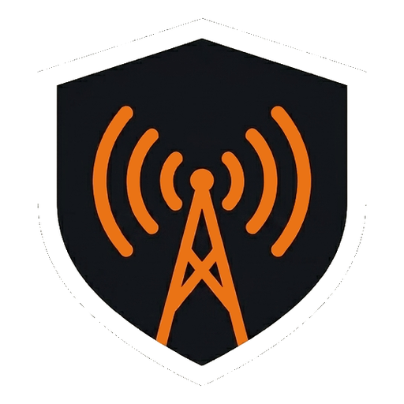

AusAware · Feeders wanted
The map is only as good as who’s listening.
Australia’s live emergency picture is stitched together from public feeds — and from receivers people run at home. One of those could be yours.
Three ways to feed
Radio
Trunked emergency radio — fire, ambulance, rescue.
Pager
The dispatch messages crews are paged with.
ADS-B
Aircraft positions, straight off the transponder.
What you need
- 1 An RTL-SDR dongleThe USB receiver that does the listening.
- 2 An antenna and cableWhich antenna depends on the frequency you are feeding.
- 3 A computer that stays onAn old laptop is fine, as long as it can stay on close to 24/7.
Where to get it
- ● Receiver RTL-SDR Blog V4 or Nooelec NESDR SMArt. Either one works for radio, pager or ADS-B.
- ● ADS-B antenna (1090 MHz) FlightAware fibreglass. For radio or pager it depends on the frequencies you are monitoring — ask and we will point you at the right one.
- ● Optional — an LNA Nooelec LANA, for more gain and less noise on a weak or distant signal.
Buying elsewhere is fine. Counterfeit RTL-SDRs are common, so check
rtl-sdr.com’s buying guide
before ordering somewhere unfamiliar.
The Wire — a different way in
You serve with an emergency service.
You photograph or film emergency vehicles.
You’re an independent journalist or stringer.
Run a receiver
Radio, pager or ADS-B. Tick whichever you can run — you can change it on the form.
Contribute to The Wire
Photos, video and articles from people who are actually there.
Free · Ad-free · Unofficial · AusAware home · About · The live map